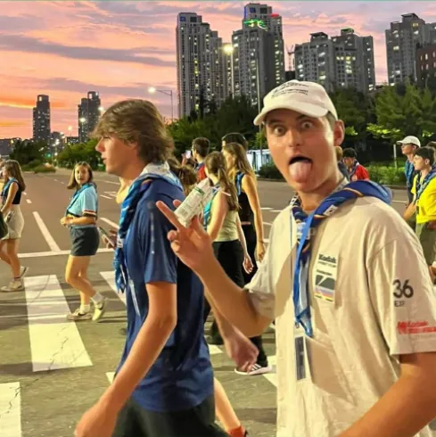
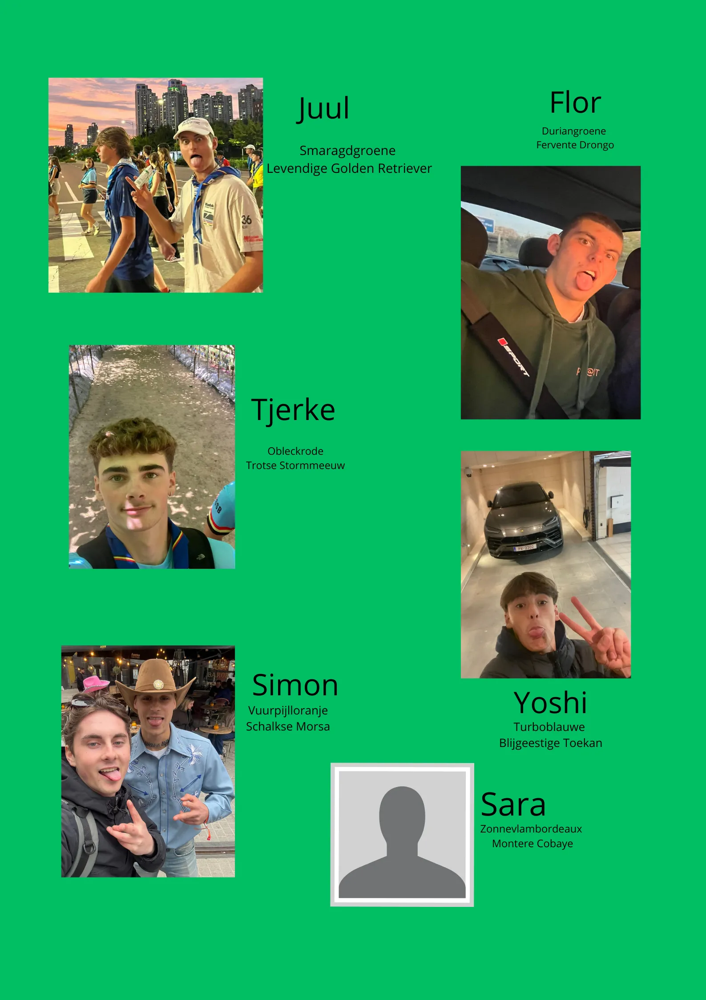
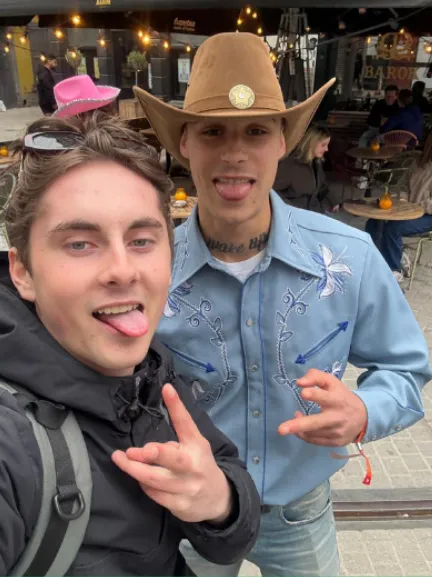

explore
11 tot 14 jaar — Jongens
Jong-Verkenners
Fysieke uitdagingen, tweedaagses en koken op houtvuur. De Jong-Verkenners verleggen hun grenzen in de natuur.
Waar echte avonturiers worden gevormd.
Bij de Jong-Verkenners (zesde leerjaar tot en met tweede middelbaar, jongens) wordt het serieus. Scoutstechnieken zoals knopen, pionieren, kaartlezen en vuur maken zijn vaste kost.
Tweedaagses, dropping, nachtspelen en koken op houtvuur — de Jong-Verkenners leren zelfstandig te zijn en verantwoordelijkheid te nemen. Het is de leeftijd waarop echte vriendschappen voor het leven ontstaan.
Onze Leiding
Het enthousiaste team dat de Jong-Verkenners begeleidt.





Klaar voor echte uitdagingen?
Schrijf je zoon vandaag nog in of kom eens proberen tijdens een van onze vergaderingen.